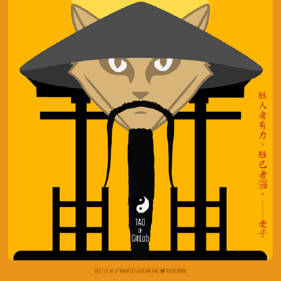

-
- Basic info. 基本信息
- 个人信息: 梁奕铃 / 男 / 31岁
- 教育经历: 本科 / 福建工程学院
- 英语水平: CET-4
- Blog: http://jcpplus.github.io/
- GitHub: www.github.com/jcpplus
-
- Experience. 项目与工作经验
上海齐家网股份有限公司厦门分公司（2015.2 - 至今）
-
最美装修手机APP
在这个项目用了什么，解决了什么，承担了什么。实现了什么等待，可以参考其他的点。
使用 AngularJS 框架 和 Sass 预处理器 来实现前端组件及数据交互，使用 Gulp browser-sync 改进工作流
 -
设计师后台
-
运管后台管理系统
厦门舜亚科技有限公司（2013.2 - 2015.2）
-
Quidsi - Mobile Web
在半年多的时间里，将Quidsi的站点实现了多移动端适配。我作为该项目的主要前端开发人员，选择了在以Foundation为框架的基础上，将Quidsi的多个站点进行了响应式的适配。bala bala
-
Quidsi - Sites All In One
在半年多的时间里，将Quidsi的站点实现了多移动端适配。我作为该项目的主要前端开发人员，选择了在以Foundation为框架的基础上，将Quidsi的多个站点进行了响应式的适配。bala bala
-
Quidsi - AutoShip
在半年多的时间里，将Quidsi的站点实现了多移动端适配。我作为该项目的主要前端开发人员，选择了在以Foundation为框架的基础上，将Quidsi的多个站点进行了响应式的适配。bala bala
-
- Skill. 技能清单
Web前端
-
HTML / CSS
能够编写语义化的 HTML，模块化的 CSS，完成较复杂的布局
了解 Less, 熟悉 Sass / Autoprefixer 等CSS预处理器和后处理方法、工具
-
JavaScript
熟悉原生Javascript，能脱离jQuery等类库编码
能运用模块化、面向对象的方式编程
了解 RequireJS jQuery BackboneJS 的使用
-
其他
了解 Grunt Gulp 前端自动化工具
掌握 Git SVN 等版本管理工具的使用
了解前端安全、性能优化方面的一些知识
后端
-
环境
了解 Apache Nginx web服务器
-
语言
了解 Java模板引擎freemarker
其他
-
了解 Vim的使用
能够熟练使用 Markdown 进行写作
知道数据库MongoDB

梁奕铃的简历
胜人者有力，自胜者强。
-
- Contact. 联系方式
- 手机: 13616012093
- 邮箱: 121046875@qq.com
- 微信: mixinwei001
- QQ: 121046875
-
- Application. 应聘岗位
- 前端工程师
-
- Tech. 技能点
HTMLCSSJavaScriptjQueryBootstrapSassFreemarker
我是一个充满活力、对前端由衷热爱、善于发现问题的前端工程师。
我目前正在寻找前端工程师岗位，希望借此机会为贵司献上我的一点绵薄之力！
我目前还在职，期待更好的发展机会。